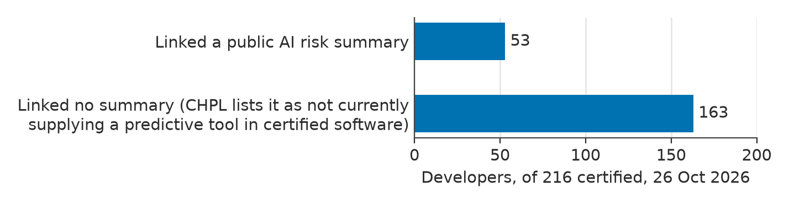

Public data · AI transparency rules
On 26 Oct 2026, 53 of the 216 US health IT developers certified to the decision-support criterion linked a public AI risk summary from their CHPL listing (24.5%). The other 163 linked none on any listing; for those listings, CHPL shows its standard line that the developer "does not currently supply a Predictive DSI as part of its Health IT Module" (that is, no predictive decision-support tool in its certified software).
ONC's HTI-5 final rule ends this duty on Mon 28 Dec 2026. This table is the record from before it does. The same pages will be captured again on Mon 4 Jan, Mon 5 Apr and Mon 5 Jul 2027, to see which developers keep, change or remove a summary. No developer is named here.
Checked again Fri 13 Nov 2026: no material change found. Live CHPL lists 288 (b)(11) listings from 217 developers. The same 78 listings link the same addresses as on 26 Oct, so the same 53 developers link a summary; the one listing added since, certified 5 Nov by a new developer, links none. All 52 linked addresses were tried again: 49 opened; 1 timed out in a browser but gave the script the same page source as on 26 Oct; 1 failed its security-certificate check; and 1 sits behind a bot check, as on 26 Oct. Of the 46 with text from 26 Oct, 34 show identical text, 1 has the same summary inside byte-identical page source, 10 changed only in menus, banners, news items, a page's build date or one capitalization (a keyword check of the changed lines found nothing in the summary itself), and 1 could be compared only on its summary section, which is unchanged. The rule is unchanged: the Federal Register shows no correction or delay, and it still takes effect 28 Dec 2026. The coded table below stays the record of 26 Oct. One wording fix: this page used to say the other 163 "stated" that they don't currently supply a predictive tool. They linked no summary, and CHPL shows its standard line for any listing without one; that line is CHPL's own wording, not the developers'.
Public data A count on one day · AI-coded; a person checked 10 of 53 · Not peer reviewed · ONC CHPL, 26 Oct 2026 · Checked again 13 Nov 2026

Counts of developers, except linked listings. Each breakdown adds up to 53. On a phone, swipe the table sideways.
| Group | Developers | Linked listings | Text saved | Names a tool | Kinds only | Process or none | Not coded | Date | Version only |
|---|---|---|---|---|---|---|---|---|---|
| All | 53 | 78 | 45 | 16 | 5 | 20 | 12 | 18 | 3 |
| Size band ((b)(11) listings) | |||||||||
| 1 listing | 40 | 40 | 33 | 14 | 5 | 10 | 11 | 11 | 3 |
| 2 to 4 listings | 8 | 16 | 8 | 2 | 0 | 6 | 0 | 5 | 0 |
| 5 or more listings | 5 | 22 | 4 | 0 | 0 | 4 | 1 | 2 | 0 |
| Certification body | |||||||||
| Drummond Group | 40 | 65 | 34 | 11 | 3 | 16 | 10 | 13 | 1 |
| SLI Compliance | 13 | 13 | 11 | 5 | 2 | 4 | 2 | 5 | 2 |
| Discloser status | |||||||||
| In the Dec 2025 study (34 of its 35) | 34 | 56 | 31 | 10 | 4 | 13 | 7 | 12 | 0 |
| Not in the Dec 2025 study | 19 | 22 | 14 | 6 | 1 | 7 | 5 | 6 | 3 |
| Segment (a judgment, low confidence for 30 of 53) | |||||||||
| General ambulatory | 35 | 39 | 28 | 15 | 5 | 7 | 8 | 11 | 3 |
| Hospital-led | 4 | 21 | 4 | 0 | 0 | 4 | 0 | 2 | 0 |
| Post-acute and long-term care | 4 | 5 | 3 | 0 | 0 | 3 | 1 | 0 | 0 |
| Specialty ambulatory | 4 | 4 | 4 | 0 | 0 | 4 | 0 | 3 | 0 |
| Other (4 segments of 2 or fewer developers each) | 6 | 9 | 6 | 1 | 0 | 2 | 3 | 2 | 0 |
The CSV has the same rows. It also splits "Text saved" into same-day, earlier copy only and none, and adds two date columns ("neither" and "not coded").
AI use. I built this table with Claude, an AI model. Claude read the saved text and coded the traits twice, blind, with a third reading on disagreements, and Python scripts did the downloads and counts. I checked 10 of the 53 codes by hand.